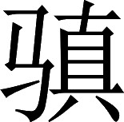

魏书 · 卷二十九
方伎传第二十九
华佗，字元化，沛国谯县人。又名旉。早年到徐州游学，兼通几部儒家经典。沛国国相陈珪举荐他为孝廉，太尉黄琬任命他为下属，他都没有接受。
注释
注释 〖1〗
旉（fū）：古写的“敷”字。据学者研究，旉是其本名；至于人们改称为“华佗”，则是受当时佛教文化的影响。因为“华佗”的古代读音，与梵语中“阿伽陀（agada）”一词的后两个音节完全相同，而“阿伽陀”的词义是药物，所以“华佗”的意思是“药神”。详见陈寅恪先生《寒柳堂集》中《三国志曹冲华佗传与佛教故事》。
注释 〖2〗
徐土：徐州。
注释 〖3〗
陈珪：事见本书卷七《吕布传》。
注释 〖4〗
黄琬（公元 141—192）：字子琰。江夏郡安陆（今湖北云梦县）人。少年聪慧。东汉桓帝时任五官中郎将，因反对举用无才德的权贵子弟被免职，中断仕官近二十年。灵帝时再次进入政界。后任司徒、太尉，封阳泉乡侯。与王允合谋诛杀董卓，不久被董卓部下杀死。传附《后汉书》卷六十一《黄琼传》。
裴注
裴注 ﹝一﹞
臣松之按：古“敷”字，与“專”相似，写书者多不能别。寻佗字元化，其名宜为“旉”也。
他通晓养生之术，当时人以为他是仙人，因为他年龄已将近百岁，但容貌仍然显得年轻。他又精通医药，治病时，合在一起煎熬的配药不过几种；而且可以在心里准确估计药物的分量，一抓即准，不必再称；煎好就喝，交代一下注意事项，他一离开病人总是很快痊愈。如需要灸，不过灼一两处穴位，每一处不过七八次，病痛立即去除。如需要针刺，也不过刺一二处穴位，下针时对病人说：“胀麻的感觉会传到某一处，如传到了，请告诉我。”病人说“已到”，华佗马上拔针，病也就好了。如果疾病结成肿瘤在体内，扎针、吃药不能治，必须动手术割治的，他便让病人先喝自己配制的麻沸散，很快病人就像醉倒和死去一样什么都不知道了，于是动刀割取。肿瘤如果在肠内，便切断肠子清洗，然后缝上腹壁敷上药膏，四五天就能好转，不痛，病人自己也没什么异常感觉；一个月左右，就完全康复了。
注释
注释 〖5〗
养性：养生。
注释 〖6〗
且：将近。
注释 〖7〗
分剂（fèn jì）：药物的分量。
注释 〖8〗
节度：指注意事项。
注释 〖9〗
舍去：离去。
注释 〖10〗
壮：中医用艾草叶点燃烧灼穴位叫做灸，每灼一次叫做一壮。以“壮”为量词，是用健壮人为准的缘故。见《梦溪笔谈》卷十八。
注释 〖11〗
针：针刺穴位。
注释 〖12〗
当引某许：指针刺后的异常感觉应当传导到身体某个地方。
注释 〖13〗
语人：告诉我。
注释 〖14〗
行：即将。差（chài）：（疾病）痊愈。
注释 〖15〗
麻沸散：古代的麻醉剂名。已失传。中国古代使用麻醉剂后剖腹施行外科手术，以这里的记载为最早，在医学史上有重要意义。
注释 〖16〗
湔（jiān）洗：清洗。
注释 〖17〗
膏摩：用药膏涂擦缝合处。
注释 〖18〗
不自寤：自己也没什么感觉。
原甘陵国国相的夫人，怀孕六个月，腹部痛得日夜不安。华佗诊脉之后，说：“胎儿已死了。”又叫一名妇女用手摸胎儿的位置，如在左边则是男胎，在右边则是女胎。那位妇女说：“胎位在左。”于是华佗配好打胎药汤让病人喝下，果然打下一个男胎，这位夫人腹痛也就好了。
某县的办事员尹世，四肢胀肿不适，口中干渴，不想听见人声，小便也困难。华佗说：“您试着做些热食来吃，如能出汗病就会好；不出汗，三天后会死。”这人赶紧做热食吃而不出汗，华佗说：“内脏的生气已断绝，会哭泣着死亡。”果然不出华佗所料。
某郡的办事员倪寻、李延在一起居住，两人都出现头痛和身体发烧，症状完全相同。华佗说：“倪寻，应当泻下；李延，则要发汗。”有人询问为什么两者的治疗方法不同，华佗说：“倪寻属于外实，李延则属于内实，所以治疗方法应有所不同。”随即分别下药，第二天早上两人就能起床。
盐渎县的严昕，与几个人一起等候华佗。华佗刚到，就问严昕说：“您身体好吗？”严昕说：“和平常一样。”华佗说：“您的面部出现了急病征兆，不要多喝酒。”严昕等交谈结束后告辞回去，走了几里远，突然一阵头晕从车上掉下来，人们扶着他又上车，载回家中，隔夜就死了。
郡督邮顿子献，得病已经治好，找华佗诊脉。华佗说：“您身体还虚，并没有完全恢复，别做使身体疲劳的事。如果和妻子同房会死的，而且临死时，会吐出舌头有几寸长。”顿子献的妻子听说丈夫的病好了，从百多里外来探望他，住下的当晚与之同房。隔了三天顿子献果然发病，结果完全像华佗预言的那样。
郡督邮徐毅得病，华佗前往看望。徐毅对华佗说：“昨天让医官刘租在中脘穴扎了针，扎完后就咳嗽不止，想睡也睡不好。”华佗说：“他的针没有扎准中脘穴，误伤了肝脏。您的饭量会一天天减少，五天以后就没救了。”后来果真如华佗所言。
东阳县陈叔山的小儿子，在两岁时得病，经常在腹泻之前哭啼，日见瘦弱。他问华佗病因，华佗说：“他母亲怀他的时候，阳气收敛，乳内虚冷。孩子得了母体的寒气，所以使他不能及时痊愈。”华佗开了自己制作的四物女宛丸，服药十天之后病就好了。
彭城国国相的夫人夜里上厕所，手被毒虫蜇伤，痛得呻吟不止难以忍受。华佗叫人把水烧热，让她在热水中泡手，终于可以使她入睡；旁边的人反复给她换水，让水保持热度，第二天疼痛即完全消除。
军吏梅平得病，除名还家。家居广陵，未至二百里，止亲人舍。有顷，佗偶至主人许，主人令佗视平。佗谓平曰：“君早见我，可不至此。今疾已结，促去，可得与家相见，五日卒。”应时归，如佗所刻〖24〗。
军队的一个办事员梅平得病，被上级除名后回家休养。他家在广陵，走到离广陵还有二百里时，在一个亲戚家借宿。不久，华佗偶然到房主人这里，主人求华佗给梅平诊病。华佗对梅平说：“您要是早点碰到我，还不至于这样。现今病势已不可缓解，赶紧走还可以和家人相见，五天后就会死。”梅平立即动身回家，一切都如华佗预计的那样。
注释
注释 〖24〗
刻：预定。
华佗在路上行走，看见一个人得了咽喉阻塞的病，很想吃东西却又咽不下去，家人正用车载上他想去就医。华佗听见他的呻吟声，停下来前去探视，对他们说：“刚才我来的路边有个卖饼的人家，盛有蒜泥调和的酸醋，去买三升喝下去，病自然去除。”病人家属按华佗的吩咐去做，病人立即吐出一条蛇状的寄生虫，他们把它悬挂在车旁，想前去拜访感谢华佗。华佗还未回来，家里的孩子们在门前做游戏，迎面看见来人，就相互说：“这些人好像碰到了我家公公，看车旁边挂的那种致病的东西就知道了。”那位病人进屋坐下，看见华佗屋里的北墙上悬挂着几十条这样的蛇状寄生虫。
又有一个郡太守得病，华佗认为这个人必须大发怒气才能痊愈，于是接受他很多财物却不给他治病，不久又离开他跑了，还留下一封信把太守痛骂一番。这个太守果真勃然大怒，还命令下人去追杀华佗。太守的儿子知道内情，嘱咐下人不要去追。太守愤怒到极点，吐出几升黑血后病就好了。
又有一个当官的自感身体不舒服，华佗说：“病灶在体内深处，得开腹割治。但是您的寿命本来超不过十年，这病也要不了您的命；忍病十年，您的寿命也差不多了，值不得特意剖腹做手术了。”这个当官的忍不住痛苦，一定要除去病根。华佗于是为他动了手术，病症随即消失，十年后这人最终还是死了。
广陵郡太守陈登得病，胸口烦闷，面色发红，不思饮食。华佗诊脉后说：“您的胃中有几升虫子，将要结成肿毒，是多吃生腥食物造成的。”随即煎好二升汤药，让陈登先服一升，隔一会儿全都喝光。大约过了一顿饭的工夫，陈登吐出了三升多虫子，红头，躯体都会动，躯体有半截是切细的生鱼肉，陈登的病也马上痊愈。华佗说：“这病三年后还会复发，遇上好的医生才能解救。”三年后陈登果然发病，可惜这时华佗不在，结果如华佗所说不治而死。
太祖曹操听说华佗的大名后召见他，让他在左右服务。曹操患有头部眩晕疼痛的病，每次发病时，心中慌乱眼冒金星，华佗用针扎膈俞穴，立刻就能缓解。
李将军的妻子病得厉害，求华佗诊脉。华佗诊脉后说：“怀孕时小产了，但胎儿没有出来。”将军说：“最近她确实小产，但是胎儿已出来了。”华佗说：“根据脉象，胎儿还没出来。”将军不以为然。华佗离去后，病人渐渐有所好转。
但是一百多天后再度发作，只得又把华佗请来。华佗说：“脉象依旧显示有胎儿在腹中。此前应当生下两个胎儿。一个胎儿先生，孕妇出了很多血，后一个胎儿来不及出生。母亲自己感觉不出来，旁人也没有觉察，所以没有再接生，结果这个胎儿一直没生下来。胎儿已死，血脉不能回流母体，必定干燥之后粘连在母背上，所以病人一直背痛。现在给她喝汤药，再扎一针，这个死胎一定会出来。”汤药喝过，针也扎了，病人疼痛难忍就像要临盆生产一样。华佗说：“这个死胎久已枯萎，不会自己出来，应当让旁人伸手进病人体内助产。”果然取出一个死了的男胎，手脚齐全，但颜色发黑，长约一尺左右。
华佗的绝技，都像上面所说的这样。然而他本想做一个读书当官的人，后来把行医作职业，常常后悔不已。太祖曹操的亲属得了重病，让华佗专门诊治。华佗说：“这种病近期内难以完全治好，长期不断治疗，才可以延长寿命。”这时华佗已远离家乡很久，思乡心切，因此说：“刚才得到家信，正想暂时回家看看。”回到家里后，他借口妻子病重，好几次请求宽限时间不愿回来。曹操多次写信叫他，又指示当地郡、县政府打发他上路。华佗仗恃自己有专长，讨厌为了吃饭而受人役使，仍然不动身。
太祖大怒，派人前去检查，并且吩咐：如果华佗的妻子确实有病，赐给小豆四十斛，并放宽动身的时限；如果华佗撒谎，就把他抓起来。结果华佗被丢进囚车押送到许都，经过拷问验证，他完全坦白认罪。荀彧为他求情说：“华佗的医术确实高明，能解救人命，应当宽容赦免他。”太祖说：“不用担心，难道说天下就再找不出这种鼠辈贱人了吗！”于是把华佗拷问处死。
华佗临死时，拿出一卷医书递给看管监狱的小吏，说：“这书可以救治人命。”狱吏害怕犯法不肯接受，华佗也不勉强，一把火把书烧了。华佗死后，太祖的眩晕头痛病没有去除。太祖说：“也只有华佗能治好我的病。这小子留着我的病根，想借此抬高自己，我就是不杀他，他也终究不会替我去除病根的。”后来他的爱子曹冲病危不治，太祖感叹说：“我后悔杀了华佗，结果使我的儿子白白送了命啊！”
起初，军中的办事员李成咳嗽十分厉害，昼夜无法安睡，还不时吐脓血。他向华佗求救，华佗说：“您的病是肠子上有肿毒，咳吐的脓血，不是来自肺部。给您开两钱药粉，吃了会吐出二升多脓血，然后赶紧调养，一个月后可以慢慢起床，好生将息爱护，一年后可以恢复健康。十八年之后会有轻微复发，服用这种药粉，很快会好的。如果没有这药，依旧要死。”于是又给李成两钱药粉。
李成得到药后，过了五六年，亲戚中有个人得了病，症状与李成完全相同，他对李成说：“您现在还很强健，我却快要死了，您又怎么忍心在疾病没有急性发作时把药藏起来，等着疾病来临呢？先借给我，等我好了，再为您赶到华佗那儿去要。”李成把药交给了他。那人病好后特意到华佗的家乡谯县去求药。正碰上华佗被逮捕，华家惊扰不安，他也不忍心去求药。十八年后，李成果然发病，无药可用，结果病死。
注释
注释 〖20〗
去：收藏。
注释 〖21〗
无急去药：没有急病而收藏药粉。
注释 〖22〗
不祥：指疾病。
注释 〖23〗
恃贷我：拿来借给我。
注释 〖24〗
已：病愈。
注释 〖25〗
故到谯：特意到华佗的家乡谯县。
注释 〖26〗
见收：被逮捕。
注释 〖27〗
匆匆：惊扰不安的样子。这是指华佗一家的情形。
裴注
裴注 ﹝一﹞
臣松之按：古语以“藏”为“去”。
裴注 ﹝二﹞
《佗别传》曰：“人有在青龙中，见山阳太守广陵刘景宗。景宗说中平日数见华佗，其治病（手）〔平〕脉之候，其验若神。琅邪刘勋，为河内太守，有女年几二十；左脚膝里上有疮，痒而不痛。疮愈，数十日复发，如此七八年。迎佗使视，佗曰：‘是，易治之。当得稻糠黄色犬一头，好马二疋。’以绳系犬颈，使走马牵犬，马极辄易；计马走三十余里，犬不能行；复令步人拖曳，计向五十里。乃以药饮女，女即安卧不知人。因取大刀，断犬腹近后脚之前，以所断之处向疮口，令去二三寸。停之须臾，有若蛇者从疮中而出，便以铁椎横贯蛇头。蛇在皮中动摇良久，须臾不动；乃牵出，长三尺所，纯是蛇；但有眼处而无童子，又逆鳞耳。以膏散著疮中，七日愈。又有人苦头眩，头不得举，目不得视，积年。佗使悉解衣倒悬，令头去地一二寸，濡布拭身体，令周匝；候视诸脉，尽出，五色。佗令弟子数人，以铍刀决脉，五色血尽；视赤血〔出〕，乃下，以膏摩，被覆，汗自出周匝；饮以亭历犬血散，立愈。又有妇人，长病经年，世谓寒热注病者。冬十一月中，佗令坐石槽中，平旦用寒水汲灌，云当满百。始七八灌，会战欲死；灌者惧，欲止。佗令满数。将至八十灌，热气乃蒸出，嚣嚣高二三尺。满百灌，佗乃使燃火温床，厚覆；良久，汗洽出，著粉，汗燥便愈。又有人病腹中半切痛，十余日中，鬓眉堕落。佗曰：‘是脾半腐，可刳腹养治也。’使饮药，令卧，破腹就视，脾果半腐坏。以刀断之，刮去恶内，以膏傅疮，饮之以药，百日平复。”
广陵吴普，彭城樊阿，皆从佗学。
广陵郡人吴普、彭城国人樊阿，都随从华佗学医。吴普遵照华佗的医疗方法治病，救活了很多人。
华佗曾对吴普说：“人体应当从事体力活动，但是不能疲劳过度。人要活动，食物中的营养才能得到消化，血脉也才会通畅，所以不会得病，就好像经常转动的门轴不会腐烂一样。因此古代的仙人要做导引的运动，活动关节，以求保持青春不老。我有一套养生之术，名为‘五禽戏’：第一节叫虎戏，第二节叫鹿戏，第三节叫熊戏，第四节叫猿戏，第五节叫鸟戏；既能去病，还能使腿脚轻快，可以代替导引。如身体感到不适，站起来做一节禽戏，全身会微微出汗，这时再扑上爽身粉，就会感到身体轻便，食欲大增。”吴普认真练习，活到九十多岁，还耳聪目明，牙齿完好坚固。
樊阿则擅长扎针。普通的医生都说：“后背和前胸正中不能乱下针，即使下针深度也不能超过四分。”而樊阿在后背进针深达一二寸，在前胸正中下面的巨阙穴下针，竟可深达五六寸；而病人都能痊愈。樊阿向华佗求取平常可以食用而有益健康的方子，华佗给了他一种漆叶青黏散：用漆树叶末一升，配青黏末十四两，按此比例搭配；说长久服用可以去除三种体内的寄生虫，对五脏有利，使身体轻健，头发乌黑不白。樊阿听从了华佗的话，活了一百多岁。漆树叶，到处都有；青黏，生长在丰、沛、彭城、朝歌等县。
注释
注释 〖9〗
凡医：普通医生。
注释 〖10〗
巨阙：穴位名。在肚脐上方六寸处。有心口痛、反胃、健忘、癫痫等症状则针刺此穴。
注释 〖11〗
瘳（chōu）：病愈。
注释 〖12〗
漆叶：漆树的叶。青黏：药名。即黄精。滋补虚弱，兼除风湿。
注释 〖13〗
率（lǜ）：比例。
注释 〖14〗
三虫：人体内的三种寄生虫。
注释 〖15〗
五藏（zàng）：指心、肝、脾、肺、肾。
注释 〖16〗
处所：到处。
注释 〖17〗
丰：县名。县治在今江苏丰县。沛：县名。县治在今江苏沛县。彭城：县名。县治在今江苏徐州市。朝（zhāo）歌：县名。县治在今河南淇县。
裴注
裴注 ﹝一﹞
《佗别传》曰：“青黏者，一名地节，一名黄芝；主理五藏，益精气。本出于迷入山者，见仙人服之，以告佗。佗以为佳，辄语阿，阿又秘之。近者人见阿之寿而气力强盛，怪之；遂责阿所服，因醉乱，误道之。法一施，人多服者，皆有大验。”
文帝《典论》论郤俭等事曰：“颍川郤俭，能辟谷，饵伏苓；甘陵甘始，亦善行气，老有少容；庐江左慈，知补导之术：并为军吏。初，俭之至，市伏苓，价暴数倍。议郎安平李覃，学其辟谷，餐伏苓，饮寒水；中泄利，殆至陨命。后，始来，众人无不鸱视狼顾，呼吸吐纳。军谋祭酒弘农董芬，为之过差，气闭不通，良久乃苏。左慈到，又竞受其补导之术；至寺人严峻，往从问受，阉竖真无事于斯术也。人之逐声，乃至于是。光和中，北海王和平，亦好道术，自以当仙。济南孙邕，少事之，从至京师。会和平病死，邕因葬之东陶；有书百余卷，药数囊，悉以送之。后弟子夏荣，言其尸解；邕至今恨不取其宝书仙药。刘向惑于《鸿宝》之说，君游眩于子政之言，古今愚谬，岂唯一人哉！”
东阿王作《辩道论》曰：“世有方士，吾王悉所招致：甘陵有甘始，庐江有左慈，阳城有郤俭。始，能行气导引；慈，晓房中之术；俭，善辟谷：悉号三百岁。卒所以集之于魏国者，诚恐斯人之徒，接奸宄以欺众，行妖慝以惑民；岂复欲观神仙于瀛洲，求安期于海岛，释金辂而履云舆，弃六骥而美飞龙哉？自家王与太子及余兄弟，咸以为调笑，不信之矣。然始等知上遇之有恒，俸不过于员吏，赏不加于无功，海岛难得而游，六黻难得而佩；终不敢进虚诞之言，出非常之语。余尝试郤俭：绝谷百日，躬与之寝处，行步起居，自若也。夫人不食七日则死，而俭乃如是；然不必益寿，可以疗疾而不惮饥馑焉。左慈善修房内之术，差可终命；然自非有志至精，莫能行也。甘始者，老而有少容，自诸术士咸共归之。然始辞繁寡实，颇有怪言。余常辟左右，独与之谈；问其所行，温颜以诱之，美辞以导之。始语余：‘吾本师姓韩，字世雄。尝与师于南海作金，前后数四，投数万斤金于海。’又言：‘诸梁时，西域胡来献香罽、腰带、割玉刀，时悔不取也。’又言：‘车师之西国，儿生，（擘）〔劈〕背出脾，欲其食少而（弩）〔怒〕行也。’又言：‘取鲤鱼，五寸一双，令其一（煮）〔含〕药，俱投沸膏中；有药者奋尾鼓鳃，游行沉浮，有若处渊；其一者已熟而可噉。’余时问：‘言（率）〔宁〕可试不？’言：‘是药，去此逾万里，当出塞，始不自行不能得也。’言不尽于此，颇难悉载，故粗举其巨怪者。始若遭秦始皇、汉武帝，则复为徐市、栾大之徒也。”
杜夔，字公良，河南尹辖地的人。因为懂得音律当了雅乐郎，汉灵帝中平五年（公元 188），他得病离职。本州、郡政府和司徒府聘他为下属，他因为看到天下大乱，所以不接受任命而南奔荆州。荆州牧刘表下令，让他和孟曜为汉朝天子排练合成雅乐。雅乐排练合成好以后，刘表想在厅堂中演奏观赏，杜夔劝阻说：“当初将军声称是为天子准备雅乐，现在却想在自己的厅堂中演奏观赏，恐怕不可以吧！”刘表听了杜夔的话而打消想法。
后来，刘表的儿子刘琮向太祖曹操投降，太祖任命杜夔为军谋祭酒，参与处理太乐署的事务，并命令杜夔创制新的雅乐。杜夔善于辨别乐钟的声音，聪明过人；各种乐器，无所不能，只有唱歌跳舞不是他的特长。当时，散骑侍郎邓静、尹齐善于歌唱雅乐的歌词，歌师尹胡擅长歌唱宗庙和天地祭祀的歌曲，舞师冯肃、服养则通晓以前各种朝代的舞蹈。杜夔统领他们精心研讨：考察古代的经典，采用过去的事例，多方收集资料；然后进行讲授练习，制作乐器。当时继承恢复前代古乐的事，都是从杜夔开始的。
黄初中，为太乐令、协律都尉〖13〗。
魏文帝黄初年间，杜夔任太乐令、协律都尉。
注释
注释 〖13〗
太乐令：官名。太乐署的主官，负责有关雅乐排练演奏的各种公务。协律都尉：官名。负责雅乐的指挥、乐器的调试、演奏艺人技艺的考察等。相当于太乐署乐队的总指挥。
当初，在汉朝时就从事铸乐钟的工匠柴玉，手很灵巧，而且很有新的设想和构思。当时的很多乐器，都出自他的手中，达官贵人很欣赏他。杜夔任职之后，要柴玉铸铜钟，铜钟声韵的清亮和浑厚大多不符合古法，所以多次毁掉重铸。柴玉很感厌烦，认为杜夔审定声韵的清亮和浑厚没有一定的标准，常常抗拒杜夔的指示。两人都向太祖报告，太祖把柴玉铸的铜钟都取来，交错排列后敲出声音进行比较，结果知道杜夔的判断精确而柴玉的判断谬误，于是惩罚柴玉和他的儿子们，让他们去当养马兵。
文帝爱待玉，又尝令夔与左（愿）〔 〕等于宾客之中吹笙鼓琴，夔有难色；由是帝意不悦。后因他事系夔，使（愿）〔
〕等于宾客之中吹笙鼓琴，夔有难色；由是帝意不悦。后因他事系夔，使（愿）〔
〕等于宾客之中吹笙鼓琴，夔有难色；由是帝意不悦。后因他事系夔，使（愿）〔
〕等就学；夔自谓所习者雅，仕宦有本，意犹不满。遂黜免以卒。魏文帝曹丕很喜欢柴玉，又曾经要杜夔和左&等人当着众宾客吹笙弹琴，杜夔很不乐意，从此文帝对他不满。后来文帝借其他的事把杜夔囚禁起来，让左&等人到监狱去跟杜夔学习音乐。杜夔认为自己所从事的工作很文雅，自己做官也一直循规蹈矩，所以对眼前的屈辱很是气恼，结果被罢官而死。
杜夔的弟子有河南尹人邵登、张泰、桑馥，官职都当到太乐丞；还有下邳郡人陈颃，曾任司律中郎将。当时的魏朝乐官左延年等人，虽然也精于音乐，但他们都只擅长通俗的流行音乐，在喜欢和保存古典的正统音乐方面都不如杜夔。
注释
注释 〖17〗
太乐丞：官名。太乐署的副官，协助太乐令管理雅乐。
注释 〖18〗
司律中郎将：官名。负责校正雅乐的音律。
注释 〖19〗
左延年：曹魏时太乐署的乐师。曾修改雅乐歌曲的曲调，见《晋书》卷二十二《乐志》上。
注释 〖20〗
郑声：春秋时郑国流行的新音乐。与传统的雅乐相比，曲调轻曼柔媚，被视为不正派的“淫声”。后世就以郑声来指与正统音乐背离的通俗流行音乐。
裴注
裴注 ﹝一﹞
时有扶风马钧，巧思绝世。傅玄序之曰：
“马先生，天下之名巧也；少而游豫，不自知其为巧也。当此之时，言不及巧，焉可以言知乎？为博士，居贫，乃思绫机之变，不言而世人知其巧矣。旧绫机，五十综者五十蹑，六十综者六十蹑；先生患其丧功费目，乃皆易以十二蹑。其奇文异变，因感而作者；犹自然之成形，阴阳之无穷；此轮扁之对不可以言言者，又焉可以言校也。先生为给事中，与常侍高堂隆、骁骑将军秦朗，争论于朝。言及指南车，二子谓古无指南车，记言之虚也。先生曰：‘古有之！未之思耳，夫何远之有？’二子哂之曰：‘先生名钧字德衡：钧者器之模，而衡者所以定物之轻重；轻重无准而莫不模哉！’先生曰：‘虚争空言，不如试之易效也。’于是二子遂以白明帝，诏先生作之，而指南车成。此一异也；又不可以言者也，从是天下服其巧矣。居京都，城内有地，可以为园，患无水以灌之；乃作翻车，令童儿转之；而灌水自覆，更入更出，其巧百倍于常。此二异也；其后人有上百戏者，能设而不能动也。帝以问先生：‘可动否？’对曰：‘可动。’帝曰：‘其巧可益否？’对曰：‘可益。’受诏作之。以大木雕构，使其形若轮，平地施之，潜以水发焉。设为女乐舞象，至令木人击鼓吹箫；作山岳，使木人跳丸掷剑，缘k倒立，（出入自在）〔自出自入〕；百官行署，舂磨斗鸡，变巧百端。此三异也。先生见诸葛亮连弩，曰：‘巧则巧矣，未尽善也。’言作之，可令加五倍。又患发石车：敌人之于楼边悬湿牛皮，中之则堕，石不能连属而至。欲作一轮，悬大石数十，以机鼓轮为常，则以断悬石，飞击敌城，使首尾电至。尝试以车轮悬瓴甓数十，飞之数百步矣。
有裴子者，上国之士也，精通见理；闻而哂之，乃难先生，先生口屈不〔能〕对。裴子自以为难得其要，言之不已。傅子谓裴子曰：‘子所长者言也，所短者巧也；马氏所长者巧也，所短者言也。以子所长，击彼所短，则不得不屈；以子所短，难彼所长，则必有所不解者矣。夫巧，天下之微事也；有所不解而难之不已，其相击刺，必已远矣。心乖于内，口屈于外，此马氏所以不对也。’
傅子见安乡侯，言及裴子之论；安乡侯又与裴子同。傅子曰：‘圣人具体备物，取人不以一揆也：有以神取之者，有以言取之者，有以事取之者。有以神取之者，不言而诚心先达，德行颜渊之伦是也；以言取之者，以变辩是非，言语宰我、子贡是也；以事取之者，若政事冉有、季路，文学子游、子夏。虽圣人之明尽物，如有所用，必有所试；然则试冉、季以政，试游、夏以学矣。游、夏犹然，况自此而降者乎！何者？悬言物理，不可以言尽也，施之于事，言之难尽而试之易知也。今若马氏所欲作者，国之精器，军之要用也。费十寻之木，劳二人之力，不经时而是非定。难试易验之事，而轻以言抑人异能，此犹以己智任天下之事，不易其道以御难尽之物，此所以多废也。马氏所作，因变而得是，则初所言者不皆是矣。其不皆是，因不用之，是不世之巧无由出也。夫同情者相妒，同事者相害，中人所不能免也。故君子不以人害人，必以考试为衡石；废衡石而不用，此美玉所以见诬为石，荆和所以抱璞而哭之也。’
于是安乡侯悟，遂言之武安侯；武安侯忽之，不果试也。此既易试之事，又马氏巧名已定，犹忽而不察；况幽深之才，无名之璞乎？后之君子，其鉴之哉！马先生之巧，虽古公输般、墨翟、王尔，近汉世张平子，不能过也。公输般、墨翟，皆见用于时，乃有益于世。平子虽为侍中，马先生虽给事省中；俱不典工官，巧，无益于世。用人不当其才，闻贤不试以事：良可恨也！”裴子者，裴秀；安乡侯者，曹羲；武安侯者，曹爽也。
朱建平，沛国人也。善相术〖1〗，于闾巷之间，效验非一。
朱建平，是沛国人。他擅长于相术，在街头巷尾，留下许多看准人的事例。
注释
注释 〖1〗
相术：根据人的面貌、五官、骨骼、气色、体态、手纹等，推算其吉凶、祸福、贫富、贵贱、寿夭等情况的一种迷信。
太祖为魏公，闻之，召为郎。文帝为五官将，坐上会客三十余人；文帝问己年寿，又令遍相众宾。
太祖曹操被封为魏公，听到朱建平的事迹，召他到京城当郎官。
魏文帝曹丕任五官中郎将时，曾召集三十多位宾客聚会。他先问朱建平自己能活多大年龄，然后让朱建平依次给各位宾客看相。
建平曰：“将军当寿八十；至四十时，当有小厄，愿谨护之！”
朱建平对曹丕说：“将军能活八十岁。四十岁时，会有一个小灾，希望好生保护自己。”
谓夏侯威曰〖2〗：“君四十九，位为州牧，而当有厄；厄若得过，可年至七十，致位公辅。”
又对夏侯威说：“您四十九岁时，能任州牧，但会有厄运。如能躲过这场厄运，可以活到七十，而且能升任三公。”
注释
注释 〖2〗
夏侯威：事见本书卷九《夏侯渊传》。
谓曹彪曰：“君据藩国，至五十七，当厄于兵，宜善防之！”
又对曹彪说：“您是亲王，住在自己的封地。五十七岁这年会有被兵器伤害的灾祸，要用心预防。”
起初，颍川郡的荀攸、钟繇，与朱建平关系亲善。荀攸先死，孩子很小。钟繇帮助荀家管理家务，想把荀攸一个名叫阿骛的小妾另外嫁人，他给人写信说：“我和荀君曾经让朱建平看相，朱建平说：‘荀君虽比钟君年轻，但是他会把自己的后事托付给钟君。’我当时对荀君开玩笑说：‘到时候我只把您的阿骛嫁出去就算了！’没想到荀君真的先死，当时的戏言真的应验了！而今想把阿骛嫁出去，让她找个好人家。回想朱建平相术的神妙，就是从前著名的相士唐举、许负也比不过啊。”
文帝，黄初七年，年四十，病困；谓左右曰：“建平所言八十，谓昼夜也，吾其决矣〖13〗！”顷之，果崩。
黄初七年（公元 226），魏文帝曹丕满四十岁，病得很重。他对左右的人说：“朱建平说我能活八十，我现在明白这是把白昼和黑夜加起来计算的啊。我要与你们永别了！”不久，果然驾崩。
注释
注释 〖13〗
决：永别。
夏侯威出任兖州刺史，正好四十九岁。这年的十二月上旬他突然得了病，想到朱建平的预言，自己估计必死无疑。赶紧预先写下遗书，做好办丧事的准备，都办理停当。到这一月下旬病情却开始好转，将近痊愈。到三十日下午，他请州政府负责的重要官员赴宴，席间对大家说：“我的病眼看今年就要平复，明早鸡叫时，我就满五十岁。朱建平告诫的厄运，果真能够躲过去了。”夏侯威送走宾客之后，到天黑时突然疾病发作，半夜时分就去世。
应璩六十一岁，果真担任侍中，在皇宫内值班，忽然看见一条白狗，他问别人，都说没看见。于是应璩赶紧与友人频繁聚会，忙着四处游玩，饮宴欢乐。结果他超过朱建平预言的寿命一年，在六十三岁时去世。
曹彪，封楚王，年五十七；坐与王凌通谋，赐死。
曹彪被封为楚王，五十七岁时，因与王凌合谋反叛被朝廷赐死。
凡说此辈，无不如言；不能具详，故粗记数事。惟相司空王昶、征北将军程喜、中领军王肃有蹉跌云〖22〗。肃年六十二，疾笃；众医并以为不愈。肃夫人问以遗言，肃云：“建平相我逾七十，位至三公；今皆未也，将何虑乎！”而肃竟卒。
朱建平对这些人作的预言，无不应验，不能一一列举，只能粗略记述上述几件事而已。唯有给司空王昶、征北将军程喜、中领军王肃作的预言有失误。王肃六十二岁这年，得病沉重，很多医生看了都认为治不好。王肃的夫人问他有什么遗言，王肃说：“朱建平给我看相，说我寿命将超过七十，位至三公，而今两者都未达到，您忧虑什么呢？”但王肃终究还是死了。
注释
注释 〖22〗
程喜：事见本书卷十六《杜畿传附杜恕传》。蹉跌：失误。
建平又善相马。文帝将出，取马外入；建平道遇之，语曰：“此马之相，今日死矣。”帝将乘马，马恶衣香〖23〗，惊啮文帝膝；帝大怒，即便杀之。建平，黄初中卒。
朱建平还善于相马。魏文帝曹丕将要外出。左右从外面牵进一匹马来骑，朱建平在中途遇见说：“看这匹马的样子，今天要死了。”文帝正要上马，马讨厌衣服上的香气，惊恐地咬伤文帝的膝盖。文帝大怒，立即把马杀死。朱建平在黄初年间去世。
注释
注释 〖23〗
恶（wù）：厌恶。
周宣，字孔和，乐安国人。曾在本郡政府做办事员。太守杨沛梦见有人对他说：“八月一日曹公要来，来了必定给您一根拐杖，还给您药酒喝。”杨沛赶紧叫周宣占卜这梦的吉凶。当时黄巾军纷纷起事。周宣回答说：“拐杖可以帮助体弱的人站起来，药能够为人治病；到八月一日，黄巾叛贼一定会被消灭。”到这一天，当地的黄巾军果然被打败。
后来，东平国的刘桢梦见一条蛇生了四只脚，在门内的洞中停着。他让周宣占卜，周宣说：“这是与国事有关的梦，不关您家的私事，会有造反作乱的女人被杀。”不久，果然有女子郑氏、姜氏等人因为参加反叛而被攻杀。因为蛇是女子的征兆，而脚是蛇不应当具有的器官，所以他这样预言。
魏文帝曹丕问周宣：“我梦见宫殿房顶上两片瓦掉下地，化为一对鸳鸯，这预兆什么呢？”周宣说：“后宫会有人突然死亡。”文帝说：“我骗你呢。”周宣说：“梦是心中的意念，只要具体说出心中的意念，就能够占卜吉凶。”话还未说完，黄门令就来报告，说后宫的宫女相互动手行凶双双致死。
无几，帝复问曰：“我昨夜梦青气，自地属天。”宣对曰：“天下当有贵女子冤死。”是时，帝已遣使赐甄后玺书〖8〗；闻宣言而悔之，遣人追使者不及。
过了不久，文帝又问周宣：“我昨夜梦见一股青气从地面升到天上。”周宣回答说：“天下恐怕会有一个高贵的女子冤死。”当时，文帝已派使者到邺县去赐给甄皇后诏书，令她自杀。听了周宣的话很后悔，又派人去追赶使者而没有追上。
注释
注释 〖8〗
甄后（？—公元 221）：传见本书卷五。玺书：指命令处死甄后的诏书。
帝复问曰：“吾梦磨钱文〖9〗，欲令灭而更愈明。此何谓邪？”宣怅然不对。帝重问之，宣对曰：“此自陛下家事。虽意欲尔，而太后不听，是以文欲灭而明耳。”时帝欲治弟植之罪；逼于太后，但加贬爵。
文帝又问周宣：“我做梦在石头上磨掉铜钱上的文字，想叫它们消失却越磨越显得清楚。这是为什么？”周宣听了顿时情绪低落不回答。文帝一再追问，周宣说：“这是陛下您家庭内部的事，您想按自己的意思办，但是皇太后不同意，所以铜钱文字越磨越清楚。”当时，文帝想把胞弟曹植抓起来从严治罪，但是碍于母亲卞太后的态度，所以只贬了曹植的爵位。
注释
注释 〖9〗
磨钱文：磨掉钱币上的文字。
不久文帝任命周宣做中郎，属太史令管辖。曾经有人问周宣：“我昨夜梦见一条祭祀时用茅草扎成的小狗，是什么征兆？”周宣说：“您要尝到美味佳肴了。”一会儿，这人出去办事，果然有人请他吃一顿美餐。
后又问宣曰：“昨夜复梦见刍狗。何也？”宣曰：“君欲堕车折脚。宜戒慎之！”顷之，果如宣言。
后来他又问周宣：“我昨夜又梦见茅草扎的小狗，预兆什么？”周宣说：“您将要从车上掉下来，折断了脚脖子，应当小心。”不久，果然应验。
后又问宣：“昨夜复梦见刍狗。何也？”宣曰：“君家失火。当善护之！”俄遂火起。
后来这人第三次来问周宣：“我昨夜还梦见这种小狗，是何吉凶？”周宣说：“您家要失火，应当好生防备。”不一会儿他家果然着火了。
这人对周宣说：“其实我前后三次所说的梦，都是谎话而并没有真做这样的梦，只不过想试试您的占术，为什么都灵验了呢？”周宣说：“这是有神灵在打动您说话，所以和真梦无异。”他又问周宣：“我三次都说梦见草狗，为什么每次预言的结果不同？”周宣说：“草狗，是祭神之物。所以您第一次梦见它，会得到祭祀后剩下的供神食品。而祭祀完了以后，草狗被丢到路上要受到车轮碾压，所以您从车上掉下来摔断脚脖子。草狗被碾压后，必定要被人拾回去作柴火，所以您最后一个梦预兆火灾。”
宣之叙梦，凡此类也，十中八九。世以比建平之相矣。其余效故不次列〖18〗。明帝末卒。
周宣对占梦的解释，大都像这样。十件事他能预测准八九件，当时的人把他的占术和朱建平的相术相提并论。其余有效验的事不一一叙说。他在魏明帝末年去世。
注释
注释 〖18〗
效故：有效验的事情。
管辂，字公明，平原郡人。他的相貌粗鄙丑陋，没有一点威严和风度，嗜好喝酒。聚餐和开玩笑时，和各种类型的人都能打得火热，所以人们很喜欢他而不尊重他。管辂的父亲担任管理水路粮食运输的官员。
裴注
裴注 ﹝一﹞
《辂别传》曰：“辂年八九岁，便喜仰视星辰；得人辄问其名，夜不肯寐。父母常禁之，犹不可止。自言‘我年虽小，然眼中喜视天文’。常云：‘家鸡野鹄，犹尚知时，况于人乎？’与邻比儿共戏土壤中，辄画地作天文及日月星辰。每答言说事，语皆不常；宿学耆人，不能折之，皆知其当有大异之才。及成人，果明《周易》，仰观、风角、占、相之道，无不精微。体性宽大，多所含受；憎己不仇，爱己不褒，每欲以德报怨。常谓：‘忠孝信义，人之根本，不可不厚；廉介细直，士之浮饰，不足为务也。’自言：‘知我者稀，则我贵矣；安能断江、汉之流，为激石之清？乐与季主论道，不欲与渔父同舟：此吾志也。’其事父母孝，笃兄弟，顺爱士友，皆仁和发中，终无所缺。臧否之士，晚亦服焉。父为琅邪即丘长。时年十五，来至官舍读书。始读《诗》、《论语》及《易》本，便开（渊）〔纸〕布笔，辞义斐然。于时黉上有远方及国内诸生，四百余人，皆服其才也。琅邪太守单子春，雅有材度；闻辂一黉之俊，欲得见，辂父即遣辂造之。大会宾客百余人，坐上有能言之士。辂问子春：‘府君名士，加有雄贵之姿；辂既年少，胆未坚刚，若欲相观，惧失精神；请先饮三升清酒，然后言之。’子春大喜，便酌三升清酒，独使饮之。酒尽之后，问子春：‘今欲与辂为对者，若府君四坐之士邪？’子春曰：‘吾欲自与卿旗鼓相当。’辂言：‘始读《诗》、《论》、《易》本；学问微浅，未能上引圣人之道，陈秦、汉之事；但欲论金木水火土、鬼神之情耳。’子春言：‘此最难者，而卿以为易邪？’于是倡大论之端，遂经于阴阳；文采葩流，枝叶横生，少引圣籍，多发天然。子春及众士互共攻劫，论难锋起；而辂，人人答对，言皆有余。至日向暮，酒食不行。子春语众人曰：‘此年少盛有才器，听其言论，正似司马犬子游猎之赋，何其磊落雄壮！英神以茂，必能明天文地理变化之数，不徒有言也。’于是发声徐州，号之‘神童’。”
他父亲手下的民工郭恩兄弟三人都得了跛脚病，请管辂用算卦的方法来探求原因。管辂说：“从卦中看得出您的祖坟，坟中有个女鬼，不是您的伯母，就是您的叔母。从前饥荒年间，有人贪图她的几升米，把她推入井中，听到她还发出微弱的呼叫声，井上的人又推下一块大石头，把她的头砸烂。她的孤魂冤痛，亲自向上天控诉，这就是你们兄弟都跛脚的原因。”听了这话，郭恩哭泣着承认自己的父母干过这件罪恶事。
注释
注释 〖3〗
躄（bì）：跛脚。
注释 〖4〗
利：贪图。
注释 〖5〗
排著：推到。
注释 〖6〗
啧啧：微弱的呼叫声。
注释 〖7〗
服罪：从下面裴注引《辂别传》中郭思所说“君不名主，讳也；我不得言，礼也”两句话来看，推其叔母下井的凶手应当就是郭恩的父亲或母亲。
裴注
裴注 ﹝二﹞
《辂别传》曰：“利漕民郭恩，字义博。有才学，善《周易》、《春秋》，又能仰观。辂就义博，读《易》，数十日中，意便开发，言难逾师。于此分蓍下卦，用思精妙：占黉上诸生疾病、死亡、贫富、丧衰，初无差错；莫不惊怪，谓之神人也。又从义博学仰观，三十日中，通夜不卧。语义博：‘君但相语墟落处所耳。至于推运会，论灾异，自当出吾天分。’学未一年，义博反从辂问《易》及天文事要。义博每听辂语，未尝不推几慷慨。自言‘登闻君至论之时，忘我笃疾；明暗之不相逮，何其远也’！义博设主人，独请辂，具告辛苦。自说：‘兄弟三人，俱得躄疾。不知何故？试相为作卦，知其所由。若有咎殃者，天道赦人，当为吾祈福于神明，勿有所爱。兄弟俱行，此为更生！’辂便作卦，思之未详。会日夕，因留宿；到中夜，语义博曰：‘吾以此得之！’既言其事，义博悲涕沾衣。曰：‘皇汉之末，实有斯事。君不名主，讳也；我不得言，礼也。兄弟躄来三十余载，脚如棘子；不可复治，但愿不及子孙耳！’辂言：‘火形不绝，水形无余：不及后也。’”
广平郡刘奉林的妻子病危，已买好棺材准备后事。当时是正月，他让管辂算卦。管辂算完后说：“她的寿命要到八月辛卯日的中午才结束。”刘奉林认为绝无可能，但他妻子的病竟然渐渐好转起来。到秋天疾病准时发作而死，完全如管辂所说的那样。
管辂去看望安平郡太守王基。王基请他算卦，管辂说：“您家会有一个卑贱的女人，生下一个男孩，刚落地就能行走，走入灶洞中死去。另外，您家床上会爬出一条叼着笔的大蛇，全家老小都去看，很快它又爬走。还有一只乌鸦会飞到您房中，与燕子咬斗，燕子死了，乌鸦也随之飞走。总共会有这三件怪事。”王基大惊，忙问吉凶。管辂说：“这不过是您住的官邸年代久远，所以有些山精水鬼来作怪。小男孩生下来会走，不是他自己能走，只是主火的精怪把他带到灶洞中而已。叼笔的大蛇，不过是抄写文书的老办事员死去的魂灵变的。乌鸦和燕子相斗，也只是老侍从死去的魂灵在作怪。现今卦中只看到它们的形象，没有看到它们会造成凶险的征兆，所以知道不是灾祸的预示，不必担心。”后来果然没事。
注释
注释 〖4〗
小大：小人大人。
注释 〖5〗
须臾：一会儿。
注释 〖6〗
乌：乌鸦。
注释 〖7〗
直：不过是。
注释 〖8〗
魑魅（chī mèi）：山精水怪。魍魉（wǎng liǎng）：鬼怪。
注释 〖9〗
宋无忌：传说中主火的精怪名字。将：携带。
注释 〖10〗
书佐：帮办文书的办事员。
注释 〖11〗
铃下：官员身边的听差。
注释 〖12〗
象：征象。
裴注
裴注 ﹝二﹞
《辂别传》曰：“基与辂共论《易》，数日中，大以为喜乐。语辂言：‘俱相闻善卜，定共清论，君一时异才，当上竹帛也。’辂为基出卦，知其无咎。因谓基曰：‘昔高宗之鼎，非雉所鸲；殷之阶庭，非木所生。而野鸟一鸲，武丁为高宗：桑穀暂生，太戊以兴。焉知三事不为吉祥？愿府君安身养德，从容光大，勿以知神奸污累天真。’”
当时信都县令家的女眷们无故惊恐，交替得病。他让管辂算卦。管辂说：“您家北面堂屋西端地下，埋有两个死男人，一个拿矛，一个拿弓箭，头在墙壁内，脚在墙壁外。拿矛的人要刺头，所以女眷头部沉重而疼痛抬不起来。拿弓箭的人要射胸腹部，所以女眷惊恐不安。”于是县令派人挖走尸骨，家中女眷的病都好了。
注释
注释 〖13〗
信都：县名。县治在今河北冀州市。
注释 〖14〗
更互：交替。
注释 〖15〗
重（zhòng）痛：沉重而疼痛。
注释 〖16〗
悬痛：指好像有重物一阵阵向下牵扯内脏的疼痛。
注释 〖17〗
病人：使人生病。
裴注
裴注 ﹝三﹞
《辂别传》曰：“王基即遣信都令迁掘其室中，入地八尺，果得二棺；一棺中有矛，一棺中有角弓及箭；箭久远，木皆消烂，但有铁及角完耳。及徙骸骨，去城一十里埋之，无复疾病。基曰：‘吾少好读《易》，玩之以久；不谓神明之数，其妙如此。’便从辂学《易》，推论天文。辂每开变化之象，演吉凶之兆；未尝不纤微委曲，尽其精神。基曰：‘始闻君言，如何可得，终以皆乱；此自天授，非人力也！’于是藏《周易》，绝思虑，不复学卜筮之事。辂乡里乃太原问辂：‘君往者为王府君论怪：云老书佐为蛇，老铃下为乌；此本皆人，何化之微贱乎？为见于爻象？出君意乎？’辂言：‘苟非性与天道，何由背爻象而任胸心者乎？夫万物之化，无有常形；人之变异，无有常体；或大为小，或小为大，固无优劣。夫万物之化，一例之道也。是以夏鲧，天子之父；赵王如意，汉祖之子；而鲧为黄熊，如意为苍狗。斯亦至尊之位而为黔喙之类也。况蛇者协辰巳之位，乌者栖太阳之精，此乃腾黑之明象，白日之流景；如书佐、铃下，各以微躯化为蛇、乌，不亦过乎！’”
清河郡的王经离职回家，管辂去看他。王经说：“近来出现一个怪物，我心中很不喜欢，请您算卦。”算完卦，管辂说：“卦中的爻象显示出吉祥的光辉，不会在您家中作怪。您夜晚在堂屋的门前，看见了一束像燕子和麻雀那样飞动的流光飞入您怀中，还能发出声音，您心神不安，解开衣服走来走去，还招呼您家女眷，前来帮您找流光的痕迹。我说得对不对？”王经大笑说：“确实和您说的一模一样。”管辂说：“是吉兆！预示要升官，很快就要应验。”不久，王经即升任江夏郡太守。
裴注
裴注 ﹝一﹞
《辂别传》曰：“经欲使辂卜，而有疑难之言。辂笑而答之曰：‘君侯，州里达人，何言之鄙！昔司马季主有言：夫卜者必法天地，象四时，顺仁义。伏羲作八卦，周文王三百八十四爻，而天下治。病者或以愈，且死或以生；患或以免，事或以成；嫁女娶妻，或以生长：岂直数千钱哉？以此推之，急务也。苟道之明，圣贤不让；况吾小人，敢以为难？’彦纬敛手谢辂：‘前言戏之耳。’于是辂为作卦，其言皆验。经每论辂，以为‘得龙云之精，能养和通幽者’，非徒合会之才也。”
管辂又到郭恩家，有个斑鸠飞在房梁上悲鸣。管辂说：“会有一个老翁从东方来，带着一头猪，一壶酒。主人虽然欢喜，但会有小事故发生。”第二天果然有客人来，带的礼物完全吻合。郭恩叫家人少喝酒，少吃肉，小心火灾。但在射杀一只鸡来做菜时，箭头射中树干反弹出来，伤着一个几岁小女孩的手，流出鲜血，把家里人吓得惊叫起来。
管辂到安德县令刘长仁家，有只喜鹊飞到他家屋顶上叫，叫声很急。管辂说：“喜鹊说，东北方向有个妇女昨天晚上杀死丈夫，会牵连到西邻另一个妇女的丈夫离娄，时间不会超过黄昏，告状的人就到了。”到黄昏时，果然东北方向同村的人来告状，说邻居的妇女亲手杀死丈夫，还诬赖西邻家的离娄，说离娄与自己的丈夫不和，跑来行凶杀人。
注释
注释 〖8〗
安德：县名。县治在今山东平原县东北。
注释 〖9〗
牵引：牵连。这里指诬告。离娄：人名。
注释 〖10〗
虞渊：传说中日落的地方。日在虞渊指黄昏。
注释 〖11〗
伍：基层居民组织单位。每五家为一伍，置伍长一人。
注释 〖12〗
婿：这里指丈夫。
裴注
裴注 ﹝三﹞
《辂别传》曰：“勃海刘长仁，有辩才。初，虽闻辂能晓鸟鸣，后每见，难辂曰：‘夫生民之音曰言，鸟兽之声曰鸣；故言者则有知之贵灵，鸣者则无知之贱名；何由以鸟鸣为语，乱神明之所异也？孔子曰：“吾不与鸟兽同群。”明其贱也。’辂答曰：‘夫天虽有大象而不能言，故运星精于上，流神明于下；验风云以表异，役鸟兽以通灵。表异者必有浮沉之候，通灵者必有宫商之应；是以宋襄失德，六l并退；伯姬将焚，鸟唱其灾；四国未火，融风已发；赤鸟夹日，殃在荆楚。此乃上天之所使，自然之明符。考之律吕，则音声有本；求之人事，则吉凶不失。昔在秦祖，以功受封；葛卢听音，著在《春秋》。斯皆典谟之实，非圣贤之虚名也。商之将兴，由一燕卵也；文王受命，丹乌衔书。此乃圣人之灵祥，周室之休祚，何贱之有乎？夫鸟鸣之听，精在鹑火，妙在八神；自非斯伦，犹子路之于死生也。’长仁言：‘君辞虽茂，华而不实，未敢之信。’须史有鸣鹊之验，长仁乃服。”
管辂到列人县的典农官司王弘直家，看到一股三尺多高的旋风，从西偏南三十度的方向上吹来，在庭院中晃动旋转，停止后又吹起，很久才停止。王弘直问管辂是什么征兆，管辂说：“东方会有乘马的官吏到来，恐怕父亲要为儿子哭丧了。”第二天果然有胶东县的官吏赶到，说是王弘直在那里当官的大儿子死了。
注释
注释 〖1〗
列人：县名。县治在今河北邯郸市肥乡区东北。
注释 〖2〗
申上：西偏南三十度的方向上。古代把《周易》中的乾、坤、艮、巽四个卦名，分别用来标示正西北、正西南、正东北、正东南四个方向，称为四维。在四维之间，又加上天干甲乙丙丁庚辛壬癸（戊己放在中央）、地支子丑寅卯辰巳午未申酉戌亥，就把周边等分为二十四份，构成二十四方位图。其中的申，位于西偏南三十度。
注释 〖3〗
幢幢（chuáng chuáng）：晃动。
注释 〖4〗
马吏：乘马的官吏。
注释 〖5〗
如何：感叹词。相当于“奈何”。意思是怎么办啊。
注释 〖6〗
胶东：县名。县治在今山东平度市。王弘直的儿子当在胶东做官。
王弘直问管辂怎么预料得这样准。管辂说：“这一天的干支是乙卯日，是主大儿子的征兆。树木在秋天飘落，而秋天开始时天上北斗星的斗柄正好指向西偏南三十度的方位；飘风从这个方向吹来，又对直朝东偏北三十度的方向吹去，这是一种杀死生命的厉风，所以象征死亡。风在午时吹起，午在地支中与马对应。起的卦是《离》卦，此卦象征花纹图案，而官员穿的官司服有花纹图案装饰，所以预示官员来到。西方的方位又与白虎对应，而虎在卦象中代表长辈，所以应在父亲身上。”
注释
注释 〖7〗
其日乙卯：这一天的干支是乙卯。古代用干支记日、记年。
注释 〖8〗
长（zhǎng）子之候：是大儿子的征兆。乙卯在二十四方位图中，位于东偏南十五度和正东方，两者大体是东方位置。《周易•说卦》第五章说“震，东方也”，即东方是《震》卦的卦位；第十章又说“震，一索而得男，故谓之长男”。管辂的说法即源于此。
注释 〖9〗
木落于申：申的方位，对应于季节来说是孟秋七月，即秋天的开始。这时树叶脱落，所以说木落于申。
注释 〖10〗
斗建：北斗星斗柄所指的方位。斗柄的指向一年旋转一周，古人就观察其指向以判断季节。斗柄指申，是夏历的孟秋七月。
注释 〖11〗
申破寅：在二十四方位图中，寅位于东偏北三十度，与申正好是一百八十度反方向。从申上吹来的风，直指寅上而去，故称申破寅。
注释 〖12〗
死丧之候：寅的方位，对应于季节来说为孟春正月，正是万物萌生的季节。但是申上来的风为秋风，按古人的说法是带有“肃杀之气”，将残害刚萌生的生命，所以说是死丧之候。
注释 〖13〗
加午：到达午时。古人用十二地支记时，午相当于现今上午十一时至下午一时。
注释 〖14〗
马之候也：古人把十二地支与十二生肖相配，午对应的生肖是马。
注释 〖15〗
离为文章：《离》卦又代表花纹图案。
注释 〖16〗
吏之候：官吏的征兆。因为官员服装有花纹图案，所以这么说。
注释 〖17〗
申未为虎：申未的方向与西方白虎位置相应。古代传说四方有四神兽，即东方青龙、南方朱雀、西方白虎、北方玄武（黑龟）。
有雄雉飞来，登直内铃柱头。直大以不安，令辂作卦。辂曰：“到五月必迁。”时三月也：至期，直果为勃海太守。﹝一﹞
后来又有公野鸡飞到王弘直家中系铃的柱头上，王弘直很感不安，叫管辂算卦。管辂说：“您到五月一定升官。”当时是三月，到了五月，王弘直果然升为勃海郡太守。
裴注
裴注 ﹝一﹞
《辂别传》曰：“辂又曰：‘夫风以时动，爻以象应；时者神之驱使，象者时之形表；一时其道，不足为难。’王弘直亦大学问，有道术，皆不能精。问辂：‘风之推变，乃可尔乎？’辂言：‘此但风之毛发，何足为异？若夫列宿不守，众神乱行，八风横起，怒气电飞，山崩石飞，树木摧倾，扬尘万里，仰不见天，鸟兽藏窜，兆民骇惊；于是使梓慎之徒，登高台，望风气，分灾异，刻期日：然后知神思遐幽，灵风可惧。’”
馆陶县令诸葛原升任新兴郡木守，管辂前往参加告别宴会。客人到齐后，诸葛原亲自取来燕子蛋、蜂窝和蜘蛛放在容器中，让客人猜里面是什么。管辂用算卦来猜，起卦之后他说：“第一物：含有生命元气等待变化，平时依附在房屋上，雄雌的性别已经形成，翅膀也开始生长，这是燕子蛋。第二物：它的家倒挂着，开了很多窗和门，收藏精华但又培育毒质，到了秋天就结束生命，这是蜂窝。第三物：抖动着长长的足，吐丝成网捕捉猎物作美餐，沿着网丝寻觅食物，最喜欢黑黑的夜晚，这是蜘蛛。”在座的人听了无不又惊又喜。
注释
注释 〖1〗
馆陶：县名。县治在今河北馆陶县。
注释 〖2〗
祖饯：设酒宴送别。
注释 〖3〗
射覆：古代游戏名。预先把物品遮盖好，然后让人猜是什么东西。管辂用卜卦来射覆，是一种特别的猜法。
注释 〖4〗
含气：含有生气。 须：等待。
注释 〖5〗
觳觫（hú sù）：抖动的样子。
裴注
裴注 ﹝一﹞
《辂别传》曰：“诸葛原，字景春。亦学士。好卜筮，数与辂共射覆，不能穷之。景春与辂有荣辱之分，因辂饯之，大有高谈之客。诸人多闻其善卜、仰观，不知其有大异之才。于是先与辂共论圣人著作之原，又叙五帝、三王受命之符。辂解景春微旨，遂开张战地，示以不固；藏匿孤虚，以待来攻。景春奔北，军师摧衂；自言‘吾睹卿旌旗、城池已坏也’。其欲战之士，于此鸣鼓角，举云梯，弓弩大起，牙旗雨集。然后登城曜威，开门受敌：上论五帝，如江如汉；下论三王，如翮如翰；其英者若春华之俱发，其攻者若秋风之落叶。听者眩惑，不达其义；言者收声，莫不心服；虽白起之坑赵卒，项羽之塞滩水，无以尚之。于时，客皆欲面缚衔璧，求束手于军鼓之下；辂犹总干山立，未便许之。至明日，离别之际，然后有腹心始终。一时海内俊士，八九人矣。蔡元才在朋友中最有清才，在众人中言：‘本闻卿作狗，何意为龙？’辂言：‘潜阳未变，非卿所知；焉有狗耳得闻龙声乎？’景春言：‘今当远别，后会何期？且复共一射覆。’辂占既皆中，景春大笑：‘卿为我论此卦意，纾我心怀。’辂为开爻散理，分赋形象，言征辞合，妙不可述。景春及众客莫不言：‘听后论之美，胜于射覆之乐。’景春与辂别，戒以二事，言：‘卿性乐酒；量虽温克，然不可保。宁当节之！卿有水镜之才，所见者妙，仰观虽神，祸如膏火，不可不慎！持卿睿才，游于云汉之间，不忧不富贵也。’辂言：‘酒不可极，才不可尽；吾欲持酒以礼，持才以愚，何患之有也？’”
管辂的同族哥哥管孝国住在斥丘县。管辂去看他，正好与两个客人碰见。客人离开后，管辂对孝国说：“这两个人的天庭和口耳之间都有凶气，变故将会一齐发生。他们的魂灵将要漂泊无依，并且会流亡海外，只有尸骨可以回到家中。用不了多久两人都要死。”过了几十天，这两人喝醉酒，在夜晚一同乘牛车回家，牛受惊后跑出道路翻到漳河中，都被淹死了。
在那时，管辂的左邻右舍，因为他的预测神准，所以外门不关，没有敢进行偷窃的。清河郡太守华表，任命管辂做文学掾。
安平郡的赵孔曜向冀州刺史裴徽推荐管辂说：“管辂性情宽宏大量，与世无争；仰观天文，其神妙可以和甘公、石申媲美；俯览《周易》，其精细的思维能够与司马季主抗衡。而今使君您留心搜罗隐居在山野之间的人才，像管辂就应当受到重视，使他能够赶上这尊重人才的好时候。”
注释
注释 〖1〗
华表（公元 204—275）：字伟容。平原郡高唐（今山东高唐县东北）人。曹魏时官至侍中、尚书。西晋建立，任太常卿。传见《晋书》卷四十四。
注释 〖2〗
裴徽：事见本书卷二十三《裴潜传》裴注。
注释 〖3〗
宽大：宽宏大量。
注释 〖4〗
甘公：战国时齐国著名的天文学家。著有《天文星占》八卷。石申：战国时魏国著名的天文学家。著有《天文》八卷。二人事见《史记》卷二十七《天官书》及同卷张守节《正义》。
注释 〖5〗
齐思：思维可以比美。季主：即司马季主。战国楚国故地的人。西汉文帝时，在长安的东市以卜筮为生。曾与贾谊、宋忠谈论天道人事，令二人佩服不已。传见《史记》卷一百二十七。
注释 〖6〗
垂神：留心。幽薮：幽深的湖泽。这句意指有意搜罗隐居山水之间的人才。下一句意同。
注释 〖7〗
九皋：也指幽深的湖泽。
注释 〖8〗
阴和：臣下对君上的附和。古代以阴为臣民，阳为君主。这里的君上是刺史裴徽。
注释 〖9〗
羽仪：有羽毛装饰的仪表。这里比喻人受到尊重。
管辂最初应州政府的聘任时，和弟弟管季儒一同乘车前往上任，到达东武城县的西边，他算了一卦占卜吉凶，对弟弟说：“我们会在老县城里看见三只狐狸，如果是这样我就会扬名。”他们刚走到清河西岸老县城的城角，正好看见三只狐狸蹲在城墙边，兄弟二人大喜。
正始九年举秀才。﹝一﹞
到正始九年（公元 248），果然管辂被本州刺史举荐为秀才。十二月二十八日，吏部尚书何晏请管辂去，当时邓飏也在何晏家作客。何晏对管辂说：“我听说您占卜神妙，请试算一卦，看我的官位会不会做到三公。”又问：“最近我连续几次梦见几十只苍蝇，落在鼻子尖上，赶都赶不走，这是什么缘故？”
裴注
裴注 ﹝一﹞
《辂别传》曰：“辂为华清河所召，为北黉文学。一时士友，无不叹慕。安平赵孔曜，明敏有思识；与辂有管、鲍之分，故从发干来，就郡黉上与辂相见。言：‘卿腹中汪汪，故时死人半，今生人无双；当去俗腾飞，翱翔昊苍。云何在此？闻卿消息，使吾食不甘味也。冀州裴使君，才理清明，能释玄虚；每论《易》及老、庄之道，未尝不注精于严、瞿之徒也。又眷吾意重，能相明信者。今当故往，为卿陈感虎开石之诚。’辂言：‘吾非四渊之龙，安能使白日昼阴？卿若能动东风，兴朝云，吾志所不让也！’于是遂至冀州，见裴使君。使君言：‘君颜色何以消减于故邪？’孔曜言：‘体中无药石之疾。然见清河郡内有一骐骥，拘絷后厩历年，去王良、伯乐百八十里；不得骋天骨，起风尘。以此憔悴耳。’使君言：‘骐骥今何在也？’孔曜言：‘平原管辂，字公明。年三十六，雅性宽大，与世无忌，可谓士雄；仰观天文则能同妙甘公、石申，俯览《周易》则能思齐季主；游步道术，开神无穷：可谓士英。抱荆山之璞，怀夜光之宝；而为清河郡所录北黉文学，可为痛心疾首也。使君方欲流精九皋，垂神幽薮；欲令明主不独治，逸才不久滞，高风遐被，莫不草靡；宜使辂特蒙阴和之应，得及羽仪之时：必能翼宣隆化，扬声九围也。’裴使君闻言，则慷慨曰：‘何乃尔邪！虽在大州，未见异才可用释人郁闷者，思还京师，得共论道耳！况草间自有清妙之才乎？如此，便相为取之，莫使骐骥更为凡马，荆山反成凡石！’即檄召辂，为文学从事。一相见，清论终日，不觉疲倦。天时大热，移床在庭前树下，乃至鸡向晨，然后出。再相见，便转为钜鹿从事。三见，转治中。四见，转为别驾。至十月，举为秀才；辂辞裴使君，使君言：‘丁邓二尚书，有经国才略，于物理不精也。何尚书神明精微，言皆巧妙；巧妙之志，殆破秋毫；君当慎之！自言不解《易》九事，必当以相问；比至洛，宜善精其理也。’辂言：‘何若巧妙，以攻难之才，游形之表，未入于神。夫人神者，当步天元，推阴阳，探玄虚，极幽明，然后览道无穷：未暇细言。若欲差次老，庄而参爻、象，爱微辩而兴浮藻；可谓射侯之巧，非能破秋毫之妙也。若九事皆至义者，不足劳思也；若阴阳者，精之以久。辂去之后，岁朝当有时刑大风，风必摧破树木；若发于乾者，必有天威，不足共清谈者。’”
辂曰：“夫飞鸮〖4〗，天下贱鸟；及其在林食椹〖5〗，则怀我好音〖6〗；况辂心非草木，敢不尽忠？昔元、凯之弼重华〖7〗，宣惠慈和；周公之翼成王，坐而待旦：故能流光六合〖8〗，万国咸宁。此乃履道〔之〕休应〖9〗，非卜筮之所明也。今君侯位重山岳〖10〗，势若雷电；而怀德者鲜〖11〗，畏威者众；殆非小心翼翼、多福之仁。又鼻者艮〖12〗，此天中之山〖13〗，﹝二﹞高而不危，所以长守贵也。今青蝇臭恶，而集之焉。位峻者颠，轻豪者亡〖14〗，不可不思（害）〔虚〕盈之数，盛衰之期。是故山在地中曰谦〖15〗，雷在天上曰壮〖16〗。谦，则裒多益寡〖17〗；壮，则非礼不履〖18〗。未有损己而不光大，行非而不伤败。愿君侯上追文王六爻之旨〖19〗，下思尼父彖象之义〖20〗；然后三公可决，青蝇可驱也。”
管辂说：“飞鸮，是天下的贱鸟，它们只要在林间吃了桑椹，也会给人们叫出好听的声音，何况我心非草木，怎么敢不向您进忠言呢？从前有八元、八凯这些有才德的人为虞舜效力，施予恩惠团结人民；周公辅佐成王，常常是坐以待旦兢兢业业，所以能光照天下，全国安宁。这些都是履行正道而得到的好报应，不是靠卜筮所能做到的。而今您官位比山高，权势如雷电一般令人畏惧，但真正感念您德泽的人很少，害怕您威风的人倒很多，这不能算是小心翼翼享有福分的仁慈表现。鼻子，和《周易》中的《艮》卦相对应，在相术上称为天中，要高而不危，才能长守富贵。苍蝇是脏臭的，却爬在鼻子上。位高之人容易栽跟头，轻浮强横的人要灭亡，您不能不考虑物极必反、盛极必衰的道理。我为您算了两卦，山在地的下面是《谦》卦，雷在天的上面是《壮》卦。谦，意味着把多的取出来给少的；壮，意味着非礼的事不做。天下还没有损己利人而不得到众人称赞的事，也没有为非作歹而不失败灭亡的事，愿您考虑卦中的微妙含义，想想孔子的有关解释。这样就可以做官到三公，苍蝇也可以赶走了。”
注释
注释 〖4〗
鸮（xiāo）：猫头鹰一类的鸟。
注释 〖5〗
椹：桑椹。
注释 〖6〗
怀我好音：给我叫出好听的声音。这是《诗经•泮水》中的诗句。诗中说本来叫声难听的鸮，飞到鲁国学校的树林中吃了桑椹后，叫声就变好听了。比喻人受到恩德而有所报答。
注释 〖7〗
元：即八元。传时代八位有才德的人。出自高阳氏。名字分别叫苍舒、隤敱（tuí ái）、梼戭（táo yǐn）、大临、尨（máng）降、庭坚、仲容、叔达。恺：即八恺。传说中上古时代另外八位有才德的人。出自高辛氏。名字分别叫伯奋、仲堪、叔献、季仲、伯虎、仲熊、叔豹、季狸。弼：辅佐。重华：虞舜的名字。舜曾举用八元和八恺。以上记载均见《左传》文公十八年。
注释 〖8〗
流光：发出光辉。六合：天地加上四方叫六合。意指天下。
注释 〖9〗
履道休应：履行正道而造成的好报应。
注释 〖10〗
君侯：对封侯者的尊称。
注释 〖11〗
怀德：思念您的德泽。
注释 〖12〗
鼻者艮：鼻和《艮》卦相对应。在《周易》八个单卦中，《艮》代表山，而鼻子突起在面部，与山相像，所以这样说。
注释 〖13〗
天中：看相的术士把鼻子所在的位置叫做天中。
注释 〖14〗
轻豪：轻浮强横。
注释 〖15〗
山在地中曰谦：《周易》中的复卦《谦》，卦形下面是单卦《艮》，代表山；上面是单卦《坤》，代表地。所以说山在地的下面。
注释 〖16〗
雷在天上曰壮：《周易》中的复卦《大壮》，卦形下面是单卦《乾》，代表天；上面是单卦《震》，代表雷。所以说雷在天上。
注释 〖17〗
裒（póu）多益寡：减少有多的，补充不足的。这是《谦》卦象辞中的一句。
注释 〖18〗
非礼不履：这是《大壮》卦象辞中的一句。从以上叙述来看，何晏问了两个问题，管辂相应卜了两卦。针对是否能当三公的是《大壮》，卦象中雷声在天上震响，是对人们发出警告。针对青蝇飞鼻的是《谦》，卦象中高山陷到地下，象征应损减有余以补充不足。管辂认为卦象告诫何晏要行正道，戒骄盈，否则不仅当不上三公，还会有败亡的灾祸。
注释 〖19〗
六爻之旨：指《周易》中卦辞、爻辞的含意。当时郑玄一派学者认为，《周易》中卦辞、爻辞是周文王制作的。
注释 〖20〗
尼父：对孔子的尊称。彖（tuàn）象：即《彖辞》、《象辞》。相传为孔子所作。前者解释卦名、卦义、卦辞，后者解释卦名、卦义、爻辞。《周易》的内容分经、传（zhuàn）两大部分。卦形、卦名、卦辞、爻辞组成经的部分。传的部分包括七种解释经的论述，《彖辞》和《象辞》是其中两种。
裴注
裴注 ﹝二﹞
臣松之按：《相书》谓鼻之所在为“天中”。鼻有山象，故曰“天中之山”也。
邓飏说：“这不过是老生常谈。”管辂回答说：“老生看见了不能生存的人，而常谈者看见了不再能谈话的人。”何晏说：“过了年再和您见面。”
管辂回到城中自己的住处，把说过的话告诉给舅舅，舅舅责怪他说话太直率。管辂说：“和死人说话，怕什么呢？”舅舅大怒，骂管辂狂妄无理。这年正月初一皇帝与百官聚会，从西北方刮来大风，尘土飞扬遮天蔽日。十多天后，听说何晏、邓飏都被诛杀，他舅舅这才服气。
注释
注释 〖21〗
不生：不能生存者。暗示何晏有杀身之祸。
注释 〖22〗
岁朝（cháo）：每年正月初一日皇帝与百官的朝见聚会。这里指嘉平元年（公元 249）的岁朝。当天起西北大风，掀起屋面，折断树木，昏尘蔽天。见《宋书》卷三十四《五行志》五。
裴注
裴注 ﹝三﹞
《辂别传》曰：“辂为何晏所请，果共论《易》九事；九事皆明，晏曰：‘君论阴阳，此世无双。’时邓飏与晏共坐，飏言：‘君见谓善《易》，而语初不及《易》中辞义，何故也？’辂寻声答之曰：‘夫善《易》者，不论《易》也。’晏含笑而赞之：‘可谓要言不烦也。’因请辂为卦。辂既称引鉴戒，晏谢之曰：‘知机其神乎，古人以为难；交疏而吐其诚，今人以为难。今君一面而尽二难之道，可谓明德惟馨。《诗》不云乎，中心藏之，何日忘之！’”
裴注 ﹝四﹞
《辂别传》曰：“舅夏大夫问辂：‘前见何、邓之日，为已有凶气未也？’辂言：‘与祸人共会，然后知神明交错；与吉人相近，又知圣贤求精之妙。夫邓之行步，则筋不束骨，脉不制肉，起立倾倚，若无手足，谓之“鬼躁”。何之视候，则魂不守宅，血不华色，精爽烟浮，容若槁木，谓之“鬼幽”。故鬼躁者为风所收，鬼幽者为火所烧；自然之符，不可以蔽也。’辂后因得休，裴使君问：‘何平叔一代才名，其实何如？’辂曰：‘其才若盆盎之水，所见者清，所不见者浊。神在广博，志不务学，弗能成才。欲以盆盎之水，求一山之形，形不可得，则智由此惑。故说《老》、《庄》，则巧而多华；说《易》生义，则美而多伪；华则道浮，伪则神虚；得上才则浅而流绝，得中才则游精而独出：辂以为少功之才也。’裴使君曰：‘诚如来论。吾数与平叔共说《老》、《庄》及《易》，常觉其辞妙于理，不能折之。又时人吸习，皆归服之焉，益令不了。相见得清言，然后灼灼耳。’”
始，辂过魏郡太守钟毓〖1〗；共论《易》义，辂因言“卜可知君生死之日”。毓使筮其生日月，如言无蹉跌。毓大愕然，曰：“君可畏也！死以付天，不以付君。”遂不复筮。
起初管辂去看望魏郡太守钟毓，共同讨论《周易》。管辂说：“卜筮可以算出您的生死之日。”钟毓让他先算自己出生的年、月、日，非常准确毫无失误。钟毓愕然大惊说：“您太可怕了！我的死期交付给上天决定，可不敢交付给您。”于是不敢再算。
注释
注释 〖1〗
过（guō）：拜访。钟毓（？—公元 263）：传附本书卷十三《钟繇传》。
钟毓问管辂：“天下会太平吗？”管辂说：“而今四九天飞，利见大人，神武升建，王道文明。还忧虑什么不太平呢？”钟毓不理解管辂说的这几句含义隐晦的话。不久，曹爽等人被诛杀，钟毓这才醒悟过来。
注释
注释 〖2〗
四九：《周易》的爻辞，把阳爻称为九，阴爻称为六。四九即从卦形下面数起第四爻为阳爻，通常说是九四。《周易》六十四卦中，第四爻为阳爻的卦形多达二十四种，这里专指《乾》卦中的九四而言。《乾》卦九四的爻辞说“或跃在渊”，即这一爻代表藏在深渊的龙。管辂以此暗喻装病不理政事的司马懿。天飞：飞上天。《乾》卦第五爻也是阳爻，称为九五。九五的爻辞说“飞龙上天，利见大人”，意指潜藏的龙飞腾上天了，一个统治者将居高临下治理社会。这里管辂暗喻司马懿将清除曹爽集团成为新政治领袖。
裴注
裴注 ﹝一﹞
《辂别传》云：“魏郡太守钟毓，清逸有才；难辂《易》二十余事，自以为难之至精也。辂寻声投响，言无留滞；分张爻象，义皆殊妙。毓即谢辂。辂卜知毓生日、月，毓愕然曰：‘圣人运神通化，连属事物，何聪明乃尔！’辂言：‘幽明同化，死生一道；悠悠太极，终而复始。文王损命，不以为忧；仲尼曳杖，不以为惧。绪烦蓍筮，宜尽其意。’毓曰：‘生者好事，死者恶事。哀乐之分，吾所不能齐；且以付天，不以付君也！’石苞为邺典农，与辂相见，问曰：‘闻君乡里翟文耀，能隐形，其事可信乎？’辂言：‘此但阴阳蔽匿之数。苟得其数，则四岳可藏，河海可逃；况以七尺之形，游变化之内；散云雾以幽身，布金水以灭迹？述足数成，不足为难。’苞曰：‘欲闻其妙，君且善论其数也。’辂言：‘夫物不精不为神，数不妙不为术；故精者神之所合，妙者智之所遇；合之机微，可以性通，难以言论；是故鲁班不能说其手，离朱不能说其目。非言之难：孔子曰‘书不尽言’，言之细也；‘言不尽意’，意之微也：斯皆神妙之谓也。请举其大体以验之。夫白日登天，运景万里，无物不照；及其入地，一炭之光，不可得见。三五盈月，清耀烛夜，可以远望；及其在昼，明不如镜。今逃日月者必阴阳之数，阴阳之数通于万类；鸟兽犹化，况于人乎？夫得数者妙，得神者灵；非徒生者有验，死亦有征。是以杜伯乘火气以流精，彭生托水变以立形。是故生者能出亦能入，死者能显亦能幽；此物之精气，化之游魂；人鬼相感，数使之然也。’苞曰：‘目见阴阳之理，不过于君；君何以不隐？’辂曰：‘夫陵虚之鸟，爱其清高，不愿江、汉之鱼；渊沼之鱼，乐其濡湿，不易腾风之鸟：由性异而分不同也。仆自欲正身以明道，直己以亲义；见数不以为异，知术不以为奇；夙夜研几，孳孳温故。而素隐行怪，未暇斯务也。’”
平原郡太守刘邠把印囊和山鸡毛装在容器中，叫管辂用卜筮来猜测，管辂说：“这件东西内方外圆，五色花纹闪光；内中的宝物可以表示信用，取出来后就能盖上字样：这是印囊。另一件东西高峰险峻，有鸟红身；翅膀黄色，早晨总要啼鸣：这是山鸡毛。”
刘邠说：“这个郡的官府房屋，连出鬼怪，令人恐怖，是什么原因？”管辂说：“这或许是因为汉末大乱，战争不息，士兵尸体流血，污染山丘，所以黄昏和晚上出现许多鬼怪形象。您道德高尚，上天保祜，希望您安心享福，显示朝廷给您的美好荣宠就行了。”
裴注
裴注 ﹝二﹞
《辂别传》曰：“故郡将刘邠，字令元。清和有思理，好《易》而不能精。与辂相见，意甚喜欢，自说‘注《易》向讫’也。辂言：‘今明府欲劳不世之神，经纬大道，诚富美之秋。然辂以为：注《易》之急，急于水火；水火之难，登时之验；《易》之清浊，延于万代；不可不先定其神，而后垂明思也。自旦至今，听采圣论，未有《易》之一分，《易》安可注也！辂不解古之圣人，何以处乾位于西北，坤位于西南？夫乾坤者，天地之象；然天地至大，为神明君父，覆载万物，生长无首，何以安处二位与六卦同列？《乾》之《象》、《彖》曰：“大哉乾元，万物资始，乃统天。”夫统者，属也，尊莫大焉，何由有别位也？’邠依《易系词》诸为之理以为注，不得其要。辂寻声下难，事皆穷析。曰：‘夫乾坤者，易之祖宗，变化之根源；今明府论清浊者有疑，疑则无神，恐非注《易》之符也。’辂于此，为论八卦之道及爻象之精，大论开廓，众化相连。邠所解者，皆以为妙；所不解者，皆以为神。自说：‘欲注《易》，八年用思勤苦，历载靡宁；定相得至论，此才不及《易》。不爱久劳，喜承雅言；如此，相为高枕偃息矣！’欲从辂学射覆，辂言：‘今明府以虚神于注《易》，亦宜绝思于灵蓍。灵蓍者，二仪之明数，阴阳之幽契；施之于道，则定天下吉凶；用之于术，则收天下毫纤。纤微，未可以为易也。’邠曰：‘以为术者，《易》之近数，欲求其端耳。若如来论，何事于斯！’留辂五日，不遑恤官，但共清谈。邠自言：‘数与何平叔论《易》及《老》、《庄》之道，至于精神遐流，与化周旋；清若金水，郁若山林：非君侣也。’邠又曰：‘此郡官舍，连有变怪，变怪多形，使人怖恐。君似当达此数者，其理何由也？’辂言：‘此郡所以名平原者，本有原；山无木石，与地自然；含阴不能吐云，含阳不能激风；阴阳虽弱，犹有微神；微神不真，多聚凶奸；以类相求，魍魉成群。或因汉末兵马扰攘，军尸流血，污染丘岳，强魂相感，变化无常；故因昏夕之时，多有怪形也。昔夏禹文明，不怪于黄龙；周武信时，不惑于暴风。今明府道德高妙，神不惧妖；自天祐之，吉无不利。愿安百禄以光休宠也。’邠曰：‘听雅论为近其理：每有变怪，辄闻鼓角声音，或见弓剑形象。夫以土山之精，伯有之魂；实能合会，干犯明灵也。’邠问辂：‘《易》言刚健笃实，“辉光”日新，斯为同不也？’辂曰：‘不同之名：朝旦为辉，日中为光。’”
《晋诸公赞》曰：“邠本名炎；犯晋太子讳，改为邠。位至太子仆。子粹，字纯嘏，侍中；次宏，字终嘏，太常；次汉，字仲嘏，光禄大夫。汉清冲有贵识，名亚乐广。宏子咸，徐州刺史；次耽，晋陵内史。耽子（恢）〔惔〕，字真长；尹丹杨，为中兴名士也。”
清河县令徐季龙派人去打猎，叫管辂猜猜能打到什么猎物。管辂说：“会猎获一只小兽，它不是可以吃的飞禽，虽有爪牙，却又小又弱，皮毛虽有花纹，美丽而不分明，不是虎，也不是山鸡，它的名字是狐狸。”猎人晚上回来，果然如管辂所言。
徐季龙又把十三种东西装在一个大箱子里，叫管辂猜。管辂说：“箱子里混杂着装了十三件东西。”先猜出鸡蛋，又猜出蚕蛹；然后逐一说出，只是把梳子说成是篦子了。
裴注
裴注 ﹝一﹞
《辂别传》曰：“清河令徐季龙，字开明。有才机。与辂相见，共论龙动则景云起，虎啸则谷风至。以为：火星者龙，参星者虎；火出则云应，参出则风到。此乃阴阳之感化，非龙虎之所致也。辂言：‘夫论难当先审其本，然后求其理；理失则机谬，机谬则荣辱之主。若以参星为虎，则谷风更为寒霜之风；寒霜之风，非东风之名。是以龙者阳精，以潜为阴；幽灵上通，和气感神；二物相扶，故能兴云。夫虎者，阴精而居于阳，依木长啸，动于巽林；二气相感，故能运风。若磁石之取铁，不见其神而金自来，有征应以相感也。况龙有潜飞之化，虎有文明之变；招云召风，何足为疑？’季龙言：‘夫龙之在渊，不过一井之底；虎之悲啸，不过百步之中：形气浅弱，所通者近。何能漂景云而驰东风？’辂言：‘君不见阴阳燧在掌握之中，形不出手；乃上引太阳之火，下引太阴之水；嘘吸之间，烟景以集。苟精气相感，悬象应乎二燧；苟不相感，则二女同居，志不相得。自然之道，无有远近。’季龙言：‘世有军事，则感鸡雉先鸣，其道何由？复有他占，唯在鸡雉而已？’辂言：‘贵人有事，其应在天；在天则日月星辰也。兵动民忧，其应在物；在物则山林鸟兽也。夫鸡者兑之畜，金者兵之精，雉者离之鸟，兽者武之神；故太白扬辉则鸡鸣，荧惑流行则雉惊，各感数而动。又兵之神道，布在六甲；六甲推移，其占无常。是以晋柩牛呴，果有西军；鸿嘉石鼓，鸣则有兵。不专近在于鸡雉也。’季龙言：‘鲁昭公八年，有石言于晋。师旷以为作事不时，怨讟动于民，则有非言之物。而言于理为合不？’辂言：‘晋平奢泰，崇饰宫室；斩伐林木，残破金石；民力既尽，怨及山泽；神痛人感，二精并作；金石同气，则兑为口舌；口舌之妖，动于灵石。传曰“轻百姓，饰城郭，则金不从革”，此之谓也。’季龙钦嘉，留辂经数日。辂占猎既验，季龙曰：‘君虽神妙，但不多藏物耳，何能皆得之？’辂言：‘吾与天地参神，蓍龟通灵；抱日月而游杳冥，极变化而览未然；况兹近物，能蔽聪明？’季龙大笑：‘君既不谦，又念穷在近矣！’辂言：‘君尚未识谦言，焉能论道？夫天地者则乾坤之卦，蓍龟者则卜筮之数，日月者离坎之象，变化者阴阳之爻，杳冥者神化之源，未然者则幽冥之先；此皆《周易》之纪纲，何仆之不谦？’季龙于是取十三种物，欲以穷之；辂射之皆中。季龙乃叹曰：‘作者之谓圣，述者之谓明：岂此之谓乎！’”
管辂随军西行，路过毌丘兴墓前，靠着树哀叹，闷闷不乐。别人问他是为什么，管辂说：“这里林木虽然繁茂，但不会保持长久；碑上的悼祭文章虽然写得很美，但不会有后代来看守。北方的玄武藏着头，东方的苍龙没有足，西方的白虎衔着尸体，南方的朱雀悲哀啼哭：四种凶象全都占齐，按堪舆家的法则死者的后代会灭绝家族。不过两年，就会应验。”结果完全如他的预言。
后来得到休假，管辂去看望清河郡倪太守。当时天早，太守问管辂什么时候会下雨。管辂说：“今晚就会下大雨。”当天晴朗干燥，从白天的天气看一点没有要下雨的迹象，府丞和清河县的县令在场，都不以为然。到夜晚一更天的时候，风云突变，星星和月亮都遮得看不见，竟下了一场瓢泼大雨，于是倪太守举行盛宴招待管辂，大家欢饮一番。
注释
注释 〖12〗
休：休假。
注释 〖13〗
旸燥：晴朗干燥。
注释 〖14〗
形似：（下雨的）迹象。
注释 〖15〗
府丞：官名。即郡丞。郡太守的副手。令：指清河县令。清河郡的治所就在清河县。
注释 〖16〗
鼓一中：古代把一夜的时间分为五段，叫做五鼓。又叫五夜或五更。鼓一中即一鼓或一更的时候。
注释 〖17〗
快雨：大雨。
注释 〖18〗
盛修主人礼：指举行盛宴款待。
裴注
裴注 ﹝二﹞
《辂别传》曰：“辂与倪清河相见；既刻雨期，倪犹未信。辂曰：‘夫造化之所以为神，不疾而速，不行而至。十六日壬子，直满，毕星中已有水气；水气之发，动于卯辰，此必至之应也。又天昨檄召五星，宣布星符：刺下东井，告命南箕，使召雷公、电母、风伯、雨师；群岳吐阴，众川激精；云汉垂泽，蛟龙含灵；晔晔朱电，吐咀杳冥；殷殷雷声，嘘吸雨灵；习习谷风，六合皆同；咳唾之间，品物流形。天有常期，道有自然，不足为难也。’倪曰：‘谈高信寡，相为忧之。’于是便留辂，往请府丞及清河令。若夜雨者，当为啖二百斤犊肉；若不雨，当住十日。辂曰：‘言念费损！’至日向暮，了无云气，众人并嗤辂。辂言：‘树上已有少女微风，树间又有阴鸟和鸣；又少男风起，众鸟和翔，其应至矣！’须臾，果有艮风鸣鸟；日未入，东南有山云楼起；黄昏之后，雷声动天；到鼓一中，星月皆没，风云并兴，玄气四合，大雨河倾。倪调辂言：‘误中耳！不为神也。’辂曰：‘误中与天期，不亦工乎！’”
正元二年（公元255），管辂的弟弟管辰对他说：“执政的司马大将军对你很好，你会富贵吗？”管辂长叹道：“我也知道大将军对我很有情分。但是上天赐给我才智，却不让我长寿，恐怕只能活四十七八岁，看不到女儿出嫁、儿子娶媳妇就会死了。如果到时候不死，就想做洛阳县令，一定会把洛阳治理得路不拾遗，盗贼绝迹。怕只怕会到泰山去治理鬼魂，没得机会治理活人了，怎么办呢！”管辰问他的原因，管辂说：“我额头上没有生命骨，眼睛没有眼神，鼻子没有鼻梁，脚又没有后跟，背部没有三甲，腹部没有三壬，这些都是不能长寿的征兆。我的本命年是寅年，又在月食之夜出生。天命有定数，躲避不了的，只不过人们不知道罢了。我一生前后预测人的死亡超过一百例，完全没有差错啊。”
注释
注释 〖1〗
大将军：指司马师。当时任大将军。
注释 〖2〗
分直：情分。
注释 〖3〗
枹鼓不鸣：指无盗贼，不用军队击鼓出发镇压。
注释 〖4〗
至泰山治鬼：当时人认为在阴间治理鬼魂的神官，是住在泰山地府的泰山令。见本书卷十四《蒋济传》裴注引《列异传》。
注释 〖5〗
守精：看相的术士把眼神叫做守精。
注释 〖6〗
天根：脚后跟。也是看相术士的用语。
注释 〖7〗
三甲：相术所说的一种有福寿的骨相。
注释 〖8〗
三壬：也是一种有福寿的骨相。
注释 〖9〗
本命在寅：生年的地支为寅。指东汉献帝建安十五年（公元 210），干支为庚寅。
注释 〖10〗
相（xiàng）：为人看相。
注释 〖11〗
略无：完全没有。
注释
注释 〖12〗
少府丞：官名。协助九卿之一的少府，管理宫廷御用衣物、珍宝、膳食、医药等。
注释 〖13〗
年四十八：正元二年（公元 255）的第二年是公元256 年。如果管辂生年在庚寅即公元 210 年，死时应为四十七岁而不是四十八岁。裴注对此也有疑问。传文恐有误。
裴注
裴注 ﹝一﹞
《辂别传》曰：“既有明才，遭朱阳之运。于时名势赫奕，若火猛风疾；当途之士，莫不枝附叶连；宾客如云，无多少皆为设食；宾无贵贱，候之以礼；京城纷纷，非徒归其名势而已，然亦怀其德焉。向不夭命，辂之荣华，非世所测也。弟辰尝欲从辂学卜及仰观事，辂言：‘卿不可教耳！夫卜，非至精不能见其数，非至妙不能睹其道；《孝经》、《诗》、《论》，足为三公。无用知之也。’于是遂止。子弟无能传其术者。”
辰叙曰：“夫晋、魏之士，见辂道术神妙，占候无错，以为有隐书及象甲之数。辰每观辂书传，惟有《易林》、《风角》及《鸟鸣》、《仰观星书》三十余卷，世所共有。然辂独在少府官舍，无家人子弟随之。其亡没之际，好奇不哀丧者，盗辂书；惟余《易林》、《风角》及《鸟鸣》书还耳。夫术数有百数十家，其书有数千卷，书不少也。然而世鲜名人，皆由无才，不由无书也。裴冀州，何、邓二尚书，及乡里刘太常、颍川兄弟，以辂禀受天才，明阴阳之道；吉凶之情，一得其源，遂涉其流，亦不为难；常归服之。辂自言与此五君共语，使人精神清发，昏不暇寐。自此以下，殆白日欲寝矣。又自言当世无所愿，欲得与鲁梓慎、郑裨灶、晋卜偃、宋子韦、楚甘公、魏石中共登灵台，披神图，步三光，明灾异，运蓍龟，决狐疑，无所复恨也！辰不以暗浅，得因孔怀之亲，数与辂有所谘论。至于辨人物，析臧否，说近义，弹曲直，拙而不工也。若敷皇、羲之典，扬文、孔之辞；周流五曜，经纬三度，口满声溢，微言风集；若仰眺飞鸿，漂漂兮景没；若俯临深溪，杳杳兮精绝；逼以攻难，而失其端；欲受学求道，寻以迷昏；无不扼腕椎指，追响长叹也。昔京房虽善卜及风律之占，卒不免祸；而辂自知四十八当亡，可谓明哲相殊。又京房目见构谗之党，耳听青蝇之声；面谏不从，而犹道路纷纭。辂处魏、晋之际，藏智以朴，卷舒有时；妙不见求，愚不见遗：可谓知机相邈也。京房上不量万乘之主，下不避佞诌之徒；欲以天文、洪范，利国利身；困不能用，卒陷大刑：可谓枯龟之余智，膏烛之末景，岂不哀哉！世人多以辂畴之京房，辰不敢许也。至于仰察星辰，俯定吉凶：远期不失年岁，近期不失日月：辰以甘、石之妙不先也。射覆名物，见术流速：东方朔不过也。观骨形而审贵贱，览形色而知生死：许负、唐举不超也。若夫疏风气而探微候，听鸟鸣而识神机：亦一代之奇也。向使辂官达，为宰相大臣；膏腴流于明世，华曜列乎竹帛；使幽验皆举，秘言不遗；千载之后，有道者必信而贵之，无道者必疑而怪之。信者以妙过真，夫妙与神合者，得神则无所惑也。恨辂才长命短，道贵时贱，亲贤遐潜，不宣于良史，而为鄙弟所见追述；既自暗浊，又从来久远，所载卜占事，虽不识本卦，捃拾残余，十得二焉。至于仰观灵曜，说魏、晋兴衰，及五运浮沉，兵革灾异，十不收一。无源何以成河？无根何以垂荣？虽秋菊可采，不及春英！临文慷慨，伏用哀惭！将来君子，幸以高明求其义焉。往孟荆州为列人典农，尝问亡兄：‘昔东方朔射覆得何卦，正知守宫、蜥蜴二物者？’亡兄于此为安卦生象，辞喻交错；微义豪起，变化相推。会于辰巳，分别龙蛇，各使有理。言绝之后，孟荆州长叹息曰：‘吾闻君论，精神腾跃，殆欲飞散。何其汪汪乃至于斯邪！’”
臣松之按：辰所称“乡里刘太常者”，谓刘寔也；辰撰辂传，寔时为太常。“颍川”则寔弟智也。寔、智并以儒学为名，无能言之；《世语》称寔“博辩”，犹不足以并裴、何之流也。又按辂自说，云“本命在寅”，则建安十五年生也。至正始九年，应三十九，而传云三十六；以正元三年卒，应四十七，传云四十八：皆为不相应也。
近有阎续伯者，名缵。该微通物，有良史风。为天下补缀遗脱，敢以所闻列于篇左；皆从受之于大人先哲，足以取信者，冀免虚诬之讥云尔。
尝受辰传所谓刘太常者曰：“辂始见闻，由于为邻妇卜亡牛，云当在西面穷墙中，悬头上向。教妇人令视诸丘冢中，果得牛。妇人因以为藏己牛，告官按验，乃知以术知，故裴冀州遂闻焉。”又云：“（路）〔洛〕中小人失妻者，辂为卜；教使明旦于东阳城门中，伺担豚人牵与共斗。具如其言，豚逸走，即共追之。豚入人舍，突破主人瓮，妇从瓮中出。”刘侯云：“甚多此类，辰所载才十一二耳。”刘侯云：“辰，孝廉才也。”
中书令史纪玄龙，辂乡里人，云：“辂在田舍，尝候远邻，主人患数失火。辂卜，教使明日于南陌上伺，当有一角巾诸生，驾黑牛故车；必引留，为设宾主，此能消之。即从辂戒。诸生有急求去，不听，遂留当宿；意大不安，以为图己。主人罢入，生乃把刀出门，倚两薪积间，侧立假寐。歘有一小物直来过前，如兽，手中持火，以口吹之。生惊，举刀斫，正断腰，视之则狐。自此主人不复有灾。”
前长广太守陈承祐，口受城门校尉华长骏语云：“昔其父为清河太守时，召辂作吏；骏与少小，后以乡里，遂加恩意。常与同载周旋，具知其事。云诸要验，三倍于传。辰既短才，又年悬小，又多在田舍，故益不详。辰仕宦至州主簿、部从事，太康之初，物故。”
骏又云：“辂卜亦不悉中，十得七八。骏问其故，辂云：‘理无差错，来卜者或言不足以宣事实，故使尔。’华城门夫人者，魏故司空涿郡卢公女也；得疾，连年不差。华家时居西城下南缠里中，三厩在其东南。辂卜：当有师从东方来，自言能治，便听使之，必得其力。后无何，有南征厩驺，当充甲卒；来诣卢公，占能治女郎。公即表请留之，专使其子将诣华氏疗疾；初用散药，后复用丸治，寻有效，即奏除驺名，以补太医。”
又云：“随辂父在利漕时，有治下屯民捕鹿者，其晨行还，见毛血，人取鹿处。来诣厩告辂，辂为卦语云：‘此有盗者，是汝东巷中第三家也。汝径往门前，伺无人时，取一瓦子；密发其碓屋东头第七椽，以瓦著下；不过明日食时，自送还汝。’其夜，盗者父病头痛，壮热烦疼，然亦来诣辂卜。辂为发祟，盗者具服。辂令担皮肉藏还著故处，病当自愈；乃密教鹿主往取。又语使复往，如前举椽，弃瓦；盗父病差。又都尉治内史有失物者，辂使明晨于寺门外看，当逢一人；使指天画地，举手四向，自当得之。暮果获于故处矣。”
评曰：华佗之医诊，杜夔之声乐，朱建平之相术，周宣之相梦，管辂之术筮：诚皆玄妙之殊巧，非常之绝技矣。昔史迁著扁鹊、仓公、日者之传〖1〗，所以广异闻而表奇事也；故存录云尔。
评论说：华佗的医术，杜夔的音乐，朱建平的相术，周宣的占梦术，管辂的卜筮术，确实都特别玄妙，堪称非同寻常的绝技。从前司马迁在《史记》中为扁鹊、仓公、日者立传，用来增加多方面的内容和记载奇异的事情；故而这一卷里也加以叙述。
注释
注释 〖1〗
史迁：即司马迁。扁鹊：姓秦，名越人。齐国勃海郑（今河北任丘市西北）人。春秋时期的名医。精通脉理，兼长内、妇、儿、针灸各科。仓公：即太仓公。复姓淳于，名意。西汉齐国临淄（今山东淄博市东）人。为汉初名医。以上二人传见《史记》卷一百五。日者：卜卦的术士。《史记》有《日者列传》，在卷一百二十七。